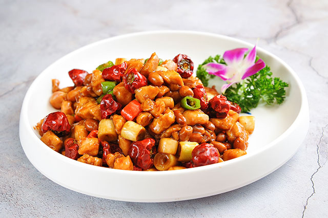

川菜 · 四川
KUNG PAO CHICKEN
宫保鸡丁
糊辣 · 微酸甜
鸡丁鲜嫩，花生酥脆，干辣椒与花椒在热油中唤出香气。一勺碗汁收拢酸甜咸香，是一道很有节奏感的川味小炒。
- 参考用时
- 约 25 分钟
- 参考份量
- 2 人份
- 烹饪方式
- 炒

BEHIND THE DISH
关于这道菜
宫保鸡丁在不同地方有不同做法。川味版本常见鸡丁、干辣椒、葱段与花生的组合，鸡肉的嫩和花生的脆形成对照。这里采用家常川味搭配，不加黄瓜，碗汁提前调好便于快速完成。
准备食材
2 人份| 食材 | 用量 |
|---|---|
| 去骨鸡腿肉 | 300 克 |
| 熟花生米 | 50 克 |
| 大葱 | 1 根 |
| 干辣椒 | 6 个，可调整 |
| 花椒 | 1 小撮 |
| 姜、蒜 | 各 10 克 |
| 淀粉 | 10 克 |
| 食用油 | 25 毫升 |
调味准备
腌鸡丁：生抽 10 毫升、料酒 10 毫升、淀粉 5 克。碗汁：生抽 15 毫升、香醋 15 毫升、白糖 10 克、淀粉 5 克、清水 30 毫升。
一步一步做
家常版本 · 5 个步骤切丁与腌制
鸡腿肉切成约 1.5 厘米的丁，用腌料抓匀，静置 10 分钟。大葱切段，姜蒜切片，干辣椒剪段。
调好碗汁
将碗汁材料拌匀，炒制前再搅一次，避免淀粉沉底。熟花生米提前备好，保持干燥。
煸香与炒鸡丁
锅中放油，先用中小火煸香花椒和干辣椒，避免烧黑。放入鸡丁，转大火快速翻炒至鸡肉熟透。
调味收汁
加入姜蒜片、葱段炒出香气，倒入碗汁，迅速翻匀，让薄芡均匀裹住鸡丁。
最后放花生
关火前放入熟花生米，翻匀立即装盘，保留花生的酥脆。
用时为估计值，食材大小、锅具和火力都会影响实际时间；以主料熟透、口感合适为准。